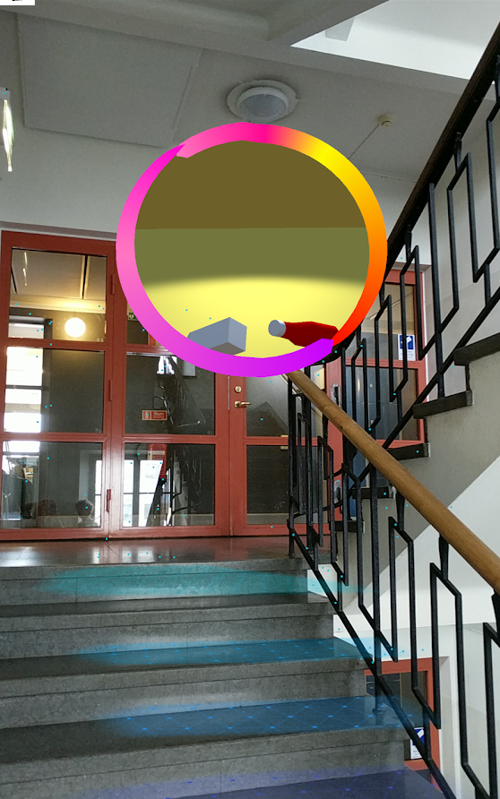

För alla som inte har glömt Pokémon Go
Jag fick till uppgift att skapa en AR-applikation där man kastade ut en boll likt i Pokémon Go för att öppna en portal. Därefter skulle man kunna röra sig igenom portalen och hamna i en alternativ verklighet. I mitt fall, ett rum med ketchup och mjölk.
